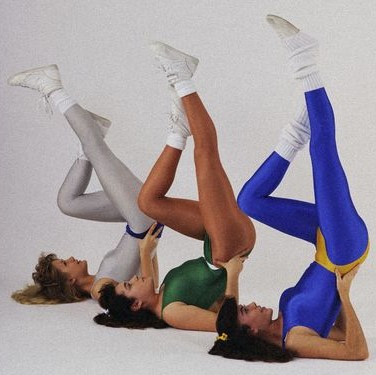

Тренажерный залЗоны тренажерных залов – это:
|
БассейнОбучение плаванию, похудение и постановка техники. Оптимальный уровень нагрузки, подбирается по состоянию здоровья для достижения наилучших результатов. Корректировка техники для достижения наивысших результатов, подготовка к соревнованиям. Уровень нагрузки варьируемый. Подготовка к соревнованием на среднем и высоком уровне нагрузки. Специальная малая группа до 6 человек. |
ЙогаТренировка, состоящая из специальных асан, направленных на гармонизацию души и совершенствование тела.
|
ПилатесБлагодаря методу Пилатеса укрепляются мышцы пресса, спины, улучшается осанка, координация, увеличивается гибкость, подвижность суставов. Кроме того, упражнения затрагивают глубокие мышцы живота и мышцы-стабилизаторы, которые почти не прорабатываются на занятиях классической и силовой аэробикой. |
|  |
АэробикаПрограммы занятий направлены на укрепление и подтяжку мышц тела (ног, живота, спины), исправление осанки. Они укрепляют позвоночник, сосуды и сердце, тело становится более гибким и эластичным. Аэробика – это активные, быстрые тренировки, особенно актуальные для тех, кто хочет быстро похудеть. |
АквааэробикаСила положительного воздействия воды на организм человека известна давно. Появление такого направления, как аква-фитнес стало вполне закономерным. Основные достоинства этого направления:
|